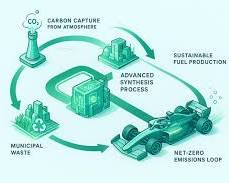

F1 2026: La Revolución del Combustible 100% Sostenible
El camino hacia las cero emisiones netas sin perder rendimiento.

¿Qué significa "100% Sostenible"?
A partir de 2026, la Fórmula 1 abandona los combustibles fósiles tradicionales. La nueva normativa exige el uso de combustibles avanzados que no añadan carbono adicional a la atmósfera. Esto se logra mediante dos vías principales:
- Combustibles Sintéticos (e-fuels): Creados capturando CO2 directamente del aire y combinándolo con hidrógeno verde (obtenido por electrólisis del agua usando energías renovables).
- Biocombustibles Avanzados: Derivados de residuos orgánicos no alimentarios (como desechos agrícolas o forestales), evitando competir con la producción de alimentos.
El objetivo es que el CO2 emitido por el escape durante la carrera sea igual a la cantidad de CO2 capturado durante la producción del combustible, logrando un ciclo cerrado de carbono.
Tabla comparativa: 2024 vs 2026
Aunque el objetivo es la sostenibilidad, los ingenieros deben mantener el rendimiento de los motores V6 actuales.
| Característica | Normativa Actual (2024) | Nueva Normativa (2026) |
|---|---|---|
| Composición Sostenible | 10% Etanol Avanzado (E10) | 100% (Sintético o Biocombustible) |
| Origen del Carbono | Fósil (Mayoría) | Captura de CO2 o Biomasa Residual |
| Densidad Energética | Muy Alta (Estándar Fósil) | Objetivo: Equivalente al Fósil |
| Emisiones Netas de CO2 | Significativas | Cero Netas (Net Zero) |
El desafío de la densidad energética y el "Knock"
El mayor reto para los proveedores de combustible (como Petronas, Shell, ExxonMobil) es replicar la inmensa densidad energética de la gasolina fósil. Los nuevos combustibles deben resistir la altísima compresión de los motores V6 turbo sin autodetonar (fenómeno conocido como "knock" o picado de bielas), lo que requiere un índice de octano extremadamente alto.
Si la densidad energética baja, el coche necesitaría más combustible para la misma distancia, lo que aumentaría el peso. Por ello, la FIA ha ajustado el flujo de combustible para asegurar que los motores sigan rindiendo cerca de los 1000 CV en combinación con la parte eléctrica.
"Este no es solo un cambio para la F1; es un laboratorio para el futuro de la movilidad global. Si podemos demostrar que estos combustibles funcionan a 300 km/h, abrimos la puerta a su uso en la aviación, el transporte marítimo y los coches de calle existentes." — Declaración de la FIA sobre la normativa 2026.